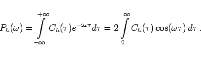
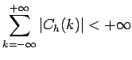
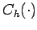

Inhalt Index DeskTop Bronstein

 Dynamische Systeme und Chaos Quantitative Beschreibung von Attraktoren Wahrscheinlichkeitsmaße auf Attraktoren Elemente der Ergodentheorie
Dynamische Systeme und Chaos Quantitative Beschreibung von Attraktoren Wahrscheinlichkeitsmaße auf Attraktoren Elemente der Ergodentheorie


Die FOURIER-Transformierte von  heißt Leistungsspektrum (s. auch Spektralinterpretation) und wird mit bezeichnet. Im zeitkontinuierlichen Fall gilt unter der Voraussetzung
heißt Leistungsspektrum (s. auch Spektralinterpretation) und wird mit bezeichnet. Im zeitkontinuierlichen Fall gilt unter der Voraussetzung
:
|  | (17.35a) |
Im zeitdiskreten Fall ist, falls  gilt:
| (17.35b) |
Liegt die absolute Integrierbarkeit bzw. Summierbarkeit von  nicht vor, kann in wichtigen Fällen Ph als Distribution aufgefaßt werden. Periodischen Bewegungen eines dynamischen Systems entspricht ein Leistungsspektrum, das durch äquidistante Impulse charakterisiert ist. Bei quasiperiodischen Bewegungen treten im Leistungsspektrum Impulse auf, die sich aus ganzzahligen Linearkombinationen der Grundimpulse der quasiperiodischen Bewegung ergeben. Ein ,,breitbandiges Spektrum mit einzelnen Spitzen`` kann dagegen als Indikator für chaotisches Verhalten gelten.
| Beispiel A |
|
Seien |
| Beispiel B |
|
Seien |